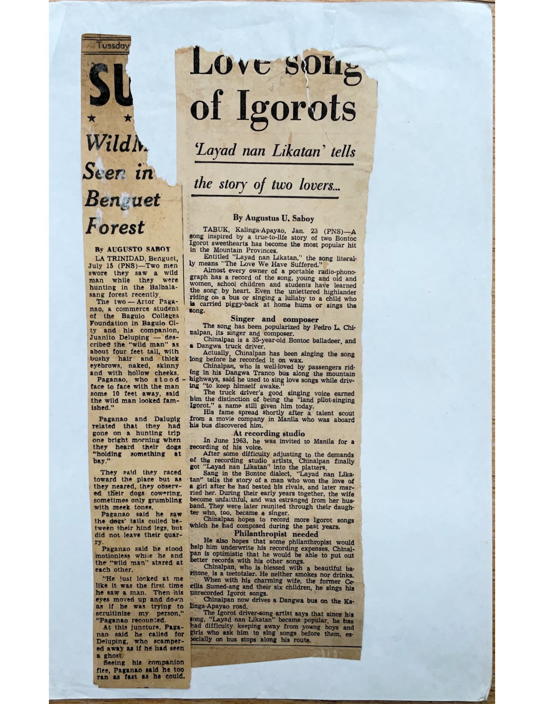

Love Song of Igorots
A newspaper feature by Augustus U. Saboy about the popularity of “Layad nan Likatan” and the Bontoc singer-composer Pedro L. Chinalpan.
About the article
Saboy reports on a song that had become widely known across the Mountain Provinces, describing how it circulated through recordings and everyday singing. His feature identifies Pedro L. Chinalpan, a Bontoc singer and Dangwa driver, as the song's singer and composer, and recounts his journey from performing for passengers to recording in Manila.
According to the article, Chinalpan was invited to Manila in June 1963 to record his voice. The feature also recounts the love story conveyed in the song and Chinalpan's hopes of recording more of his compositions. These are claims in Saboy's contemporary report, presented here as historical source material rather than independently verified biographical findings.
Original newspaper clipping

Source and editorial record
Author: Augustus U. Saboy, as printed on the clipping.
Headline: “Love Song of Igorots.”
Subheading: “‘Layad nan Likatan’ tells the story of two lovers...”
Dateline: Tabuk, Kalinga-Apayao, Jan. 23 (PNS).
Publication date: year unconfirmed.
Source: Family archival scan, Augustus Saboy articles, page 2 of the supplied PDF.
This historical article should not be confused with Anatalia Magkachi Saboy's separate writing about a related Cordillera song. Their respective titles, spellings, source dates and authorial perspectives are preserved independently.